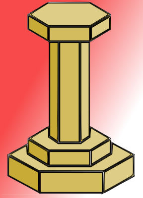

What is this?
The
Kanrodai App is a simple application to help a user determine the location at which
the
Kanrodai, the sacred spot where
Tenrikyo followers were taught to be where human beings
were first created.
What is the Kanrodai?
Kanrodai is a wooden pillar that stands on the sacred spot that is called the
Jiba
where Tenrikyo followers are taught to be where human beings were first created. The area is also often known as the "Home of the Parent"
and the pilgrimage to this location
Why do I need to know its direction?
When a Tenrikyo follower who has received the Divine Grant of
Sazuke
decides to perform this healing prayer, an initial request to
God the Parent
is made in this direction. It's often confusing, especially when you are in a building or location you are unfamiliar with.
Author
Lewis Nakao, co-founder of the
Tenrikyo Resource.